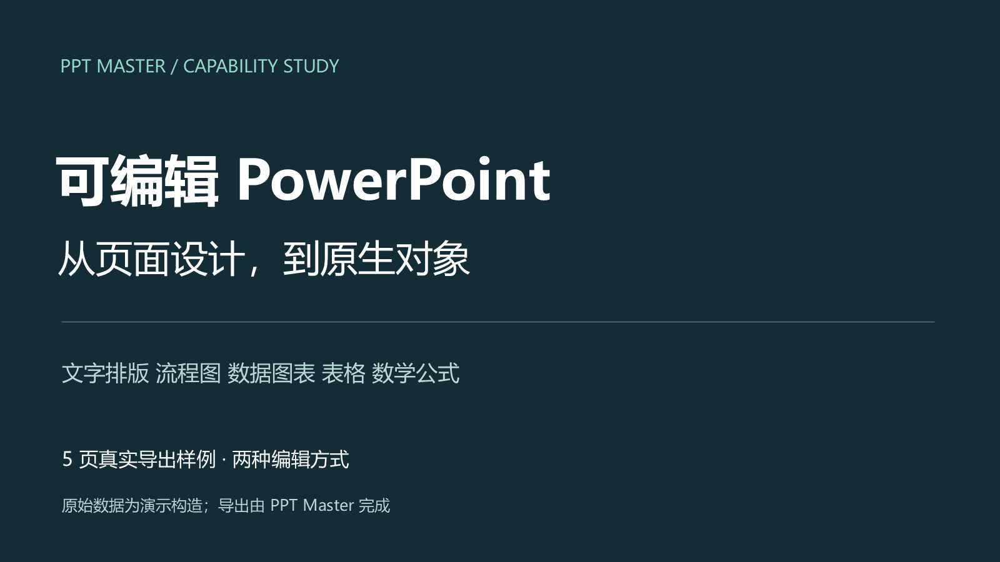

OPEN SOURCE STUDY / 001
可编辑 PPT，
实际效果在这里。
从 SVG 页面设计，到 PowerPoint 原生对象。
用五页真实导出样例，看看它能做什么、怎么做到。
本地实测 · Microsoft PowerPoint 真实渲染
THE OUTPUT16:9 · EDITABLE PPTX

native-data.pptx5 页 · 图表、表格、公式均保留原生结构
05真实导出的页面
02可下载的编辑版本
01内嵌图表工作簿
00PPT 内的图片对象
01 / LIVE GALLERY
逐页看效果，切换看差异
选择一页，再切换导出版本。
下方均为实际 PPT 文件的 PowerPoint 渲染。
这是本研究编写 SVG 后，调用上游转换工具生成的演示样例，未运行完整 AI 策划流程。图中数值为虚构示例；浏览器展示图片，真正的编辑请下载 PPT。
02 / UNDER THE HOOD
AI 负责设计，程序负责转换
本地实验验证的是后半段：
SVG → 检查 → 原生 PPTX → PowerPoint 渲染。
- 01
理解材料
文档、网页或主题
完整工作流能力
提取内容、确定叙事 - 02
设计 SVG
定义文字、坐标、图形
本例已编写
与原生数据标记 - 03
检查与编译
检查格式约束
本地已运行 ✓
转换为 DrawingML - 04
交付 PPTX
保留原生对象与数据
本地已渲染 ✓
在 PowerPoint 中继续编辑
03 / THE STYLE ATLAS
18 种风格，不止商务蓝
36 张官方案例静态预览。
按类别筛选，放大查看封面与内容页。